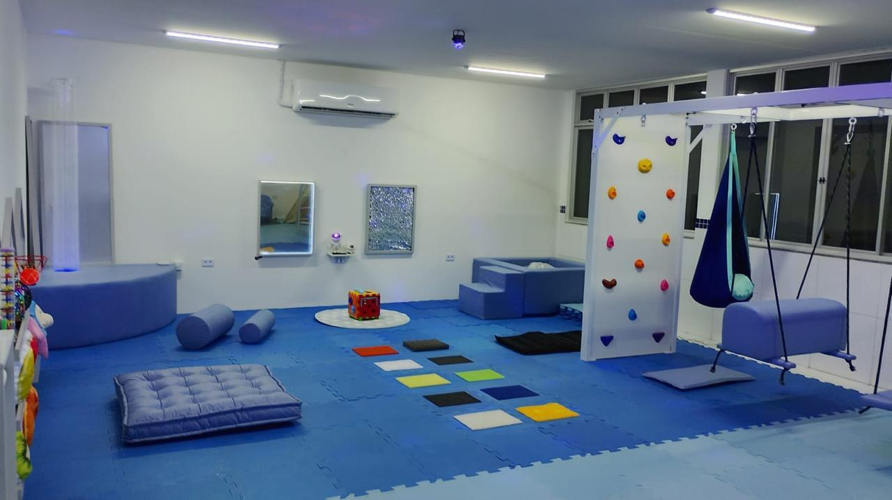
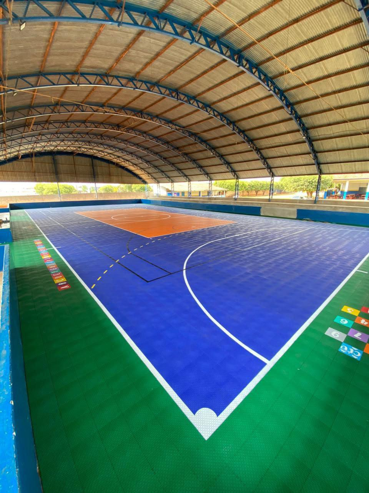
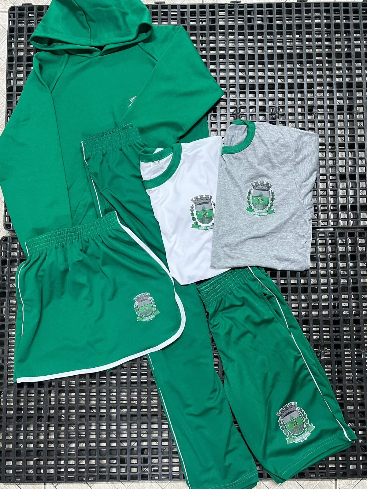
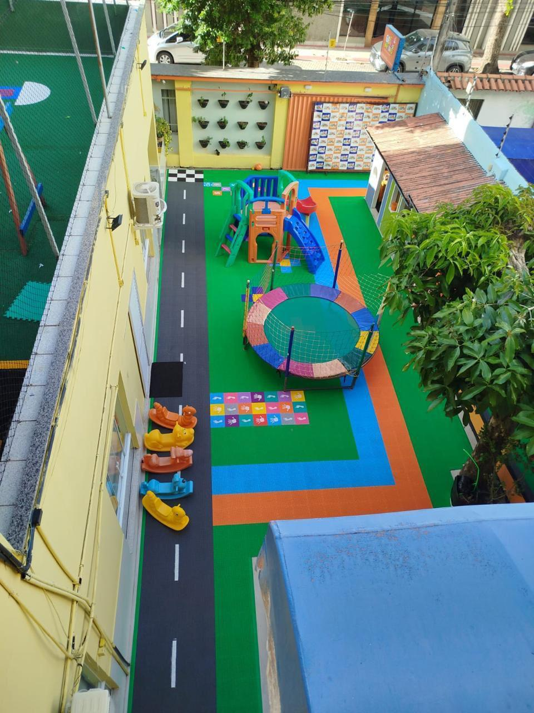

Início · Quem somos
A gente existe para o projeto sair do papel
O Portal Atto reúne, em atas de registro de preços homologadas, tudo o que uma prefeitura precisa para equipar escolas, unidades de saúde e a guarda municipal. O gestor adere à ata; nós entregamos, montamos e treinamos a equipe.
Grandes projetos nascem de boas ideias, mas só se tornam realidade quando temos parceiros em quem confiar.
Como trabalhamos
Quatro compromissos com a sua gestão
A adesão a ata resolve o processo. O que resolve o projeto é o que vem depois dela.
Segurança jurídica primeiro
Número da ata, objeto e vigência abertos desde o primeiro contato, para o jurídico conferir antes de qualquer conversa comercial.
Projeto antes da compra
O gestor vê a sala, o pátio ou o refeitório projetado antes de empenhar. Nada de comprar item por catálogo e descobrir que não cabe.
Entrega montada
Instalação feita pela nossa equipe, escola por escola, com prazo acordado e responsável definido para cada entrega.
Formação de quem vai usar
Material entregue e ninguém treinado é material encostado. Professores e equipe recebem formação junto com a entrega.
Para quem entregamos
Educação, saúde e segurança na mesma mesa
Prefeitos, secretários de educação e gestores públicos usam as mesmas atas para resolver frentes diferentes — sem abrir um processo licitatório para cada uma.




Adesão a ata de registro de preços
Comece pelo que sua rede precisa este ano
Sem abrir novo processo licitatório e sem custo para montar o projeto.